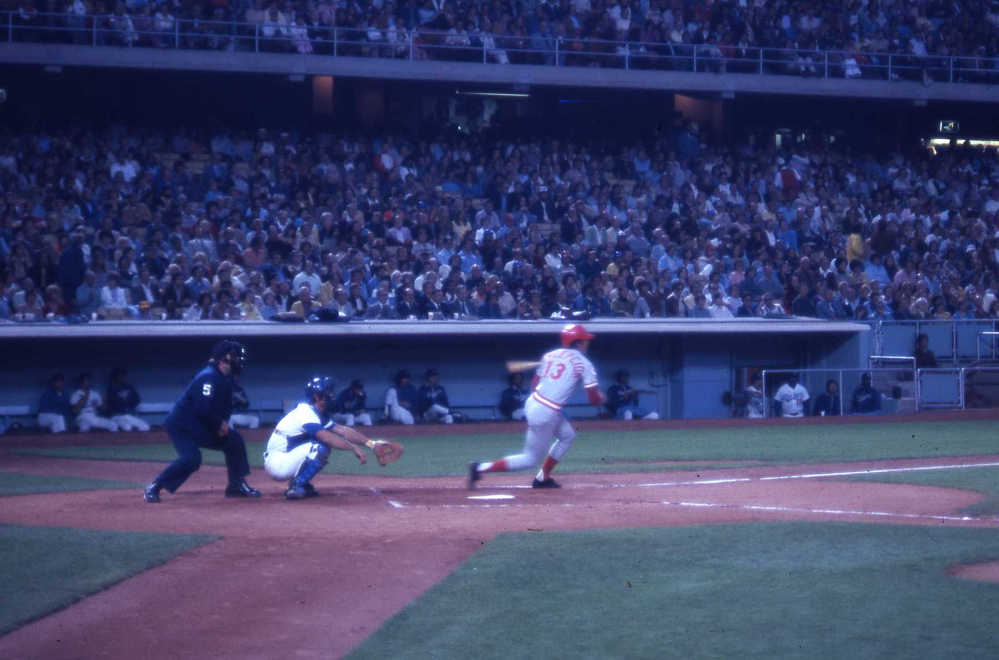

The 1976 Cincinnati Reds

`
Series Hero: Johnny Bench
Johnny Bench, the Reds' star catcher, was instrumental in their 1976 World Series victory. Known for his powerful hitting and exceptional defensive skills, Bench delivered crucial performances throughout the series. He batted .533 with two home runs and seven RBIs, earning him the World Series MVP honors. His leadership behind the plate and ability to control the opposing team's running game were vital components of the Reds' success. Bench's contributions solidified his legacy as one of the greatest catchers in baseball history.
The 1976 Cincinnati Reds, continuing their dominance as the "Big Red Machine," were once again a powerhouse in Major League Baseball. Managed by Sparky Anderson, the team featured a stellar lineup including Johnny Bench, Joe Morgan, Tony Perez, and Pete Rose. The Reds finished the regular season with an impressive record of 102-60, clinching the National League West division title for the second consecutive year. The team's success was driven by their potent offense and strong pitching staff, which included ace pitcher Gary Nolan and reliever Rawly Eastwick. In the postseason, the Reds faced the Philadelphia Phillies in the National League Championship Series (NLCS) and swept them in three games to advance to the World Series. In the World Series, the Reds went up against the New York Yankees in a thrilling seven-game series. The Reds ultimately triumphed, winning the series four games to three, with Joe Morgan being named the World Series Most Valuable Player (MVP) for his outstanding performance both at the plate and on the bases.
What set the 1976 Reds apart was their remarkable balance and depth. The team became the only squad in MLB history to go undefeated in the postseason since the introduction of the League Championship Series, sweeping both the NLCS and the World Series. Their World Series victory was especially dominant, as they swept the New York Yankees in four straight games, outscoring them 22-8. The Reds' offense led the National League in runs scored, batting average, and stolen bases, with Joe Morgan winning his second consecutive NL MVP award. The defense was equally impressive, with multiple Gold Glove winners anchoring the infield and outfield. Manager Sparky Anderson's leadership and ability to utilize his deep bench were crucial to their success. The 1976 Reds are often cited as one of the most complete and unselfish teams ever assembled, with every player contributing to their historic run. Their back-to-back championships cemented the Big Red Machine's place in baseball lore.
1975 Cincinnati Reds Roster
| Player Name |
Position |
BA |
HR |
| Gary Nolan |
Pitcher |
3.46 ERA |
113 Ks |
| Johnny Bench |
Catcher |
.234 |
16 |
| Tony Pérez |
First Baseman |
.260 |
19 |
| Joe Morgan |
Second Baseman |
.320 |
27 |
| Pete Rose |
Third Baseman |
.323 |
10 |
| Dave Concepción |
Shortstop |
.281 |
9 |
| George Foster |
Left Fielder |
.306 |
29 |
| César Gerónimo |
Center Fielder |
.307 |
2 |
| Ken Griffey Sr. |
Right Fielder |
.336 |
6 |
| Sparky Anderson |
Manager |
N/A |
N/A |